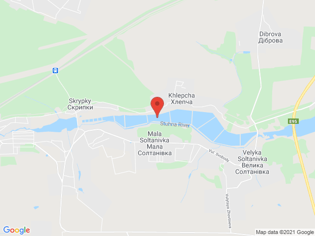
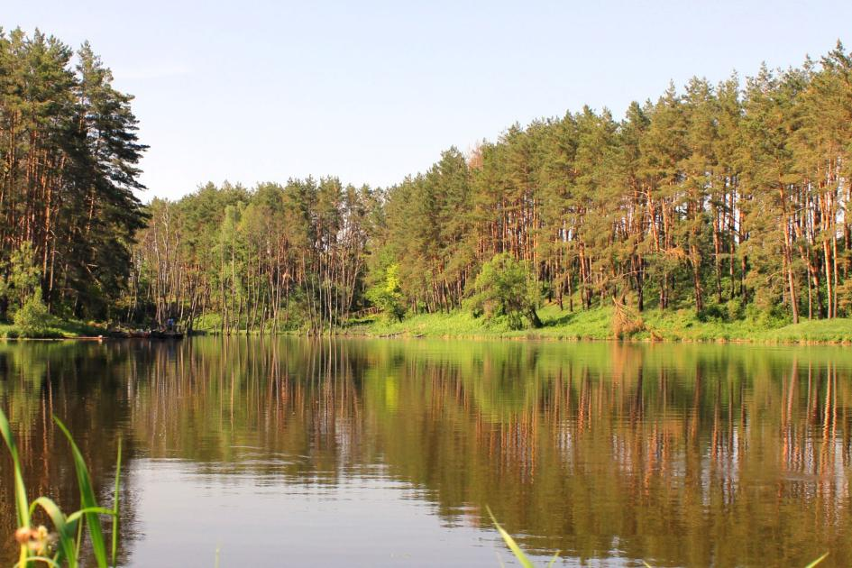
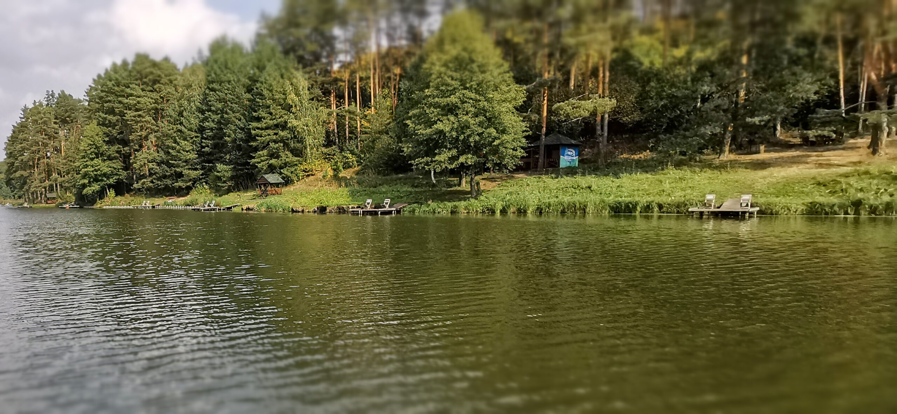

Річки та Озера
На головну,
Різновиди риби,
Оснастка,
Наживка,
Річки та Озера
Найкращі місця для рибалки в Україні
Озера:
Село Хлепча, Київської області, 30 км. від Києва
Рибальський клуб «Солтанівка»

Рибальський клуб «Солтанівка» – це прекрасне
місце для сімейного та корпоративного відпочинку,
і справжній рай для любителів риболовлі. Порибалити
можна з комфортабельної вимостки на березі озера.
Озеро Рибальська стрілка Київської області

Озеро "Рибальська стрілка" в Київській області - це неймовірне місце,
яке манить рибалок своєю красою та багатством. Оточене хвойним лісом,
ця водойма створює ідеальну атмосферу для відпочинку та риболовлі.
Тут можна насолодитися риболовлею в комфортних умовах. Для зручності
на озері облаштовані альтанки, будиночки, мангали та гамаки, що дозволяють
розслабитися та насолодитися природою навколо. Рибальські місця обладнані
зручними дерев'яними вимостками, що робить риболовлю ще більш комфортною та зручною.
Озеро Михайлина Київська область

Назва "Михайлина" походить від імені Михайла Терещенка - мецената,
який був одним із засновників озера. Місцевість навколо водойми
дуже красива. Озеро оточене лісом, а наповнюється джерелами і струмком - лівою
притокою річки Ірпінь. Площа озера 6 Га, а максимальна глибина - приблизно 3 метри.
На водоймі для риболовлі обладнані дерев'яні помости із сидіннями. Можна також ловити і з берега.
Тут ловлять:
- Форель
- Веслоніс
- Щука
- Судак
- Окунь
- Сом
- Карась
- Короп
- Краснопірка
- Лин
- Білий амур
- Плотва
- Товстолоб
- Форель
- Веслоніс
- Щука
- Судак
- Окунь
- Сом
- Карась
- Короп
- Краснопірка
- Лин
- Білий амур
- Плотва
- Товстолоб
Річки:
Найкращі для ловлі річки є Дністер, Дніпро.
Вони посідають 1 місце по ловлі як мироної так і хижої риби.
Також там є усі види риби.